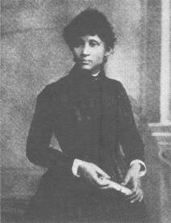

Lucy Parsons: Woman of Will
By the Women's History Information Project For almost 70 years, Lucy Parsons fought for the rights of the poor and disenfranchised in the face of an increasingly oppressive industrial economic system. Lucy's radical activism challenged the racist and sexist sentiment in a time when even radical Americans believed that a woman's place was in the home.
Early Life
Little is known about the early life of Lucy Parsons. She had an African American, Native American, and Mexican ancestry. She was born in Texas around 1853, during the Civil War Era, and it is likely that her parents were slaves. During her lifetime, in order to disguise her racial origins in a prejudiced society, Lucy went under many surnames. She often went by Lucy Gonzales, denying her African American roots, while claiming her Mexican heritage as the cause of her dark skin tone.
Around 1870, while living with a former slave named Oliver Gathings, Lucy met Albert Parsons, who would soon become her husband. Their marriage, however, was probably not legal, since miscegenation laws (laws forbidding marriage or cohabitation between white people and members of other races) prevented interracial marriages at the time.
In 1872, while the South was instituting repressive Jim Crow segregation laws, Lucy and Albert were forced to leave Texas due to their political involvement. Albert had worked diligently on registering Black voters and was shot in the leg and threatened with lynching. He and Lucy also felt threatened because of their interracial marriage.
Lucy and Albert arrived in Chicago in 1873, where Albert quickly found a job as a printer for the Chicago Times. This was a difficult time for working people all over the nation, especially in industrial cities like Chicago, because the country had fallen into a depression, leaving millions of people unemployed. The passing of the Contract Labor Law of 1864 allowed American businesses to contract and bring in immigrant laborers. A large, unskilled pool of workers grew in Chicago, which drove wages down. The laboring population, however, was being radicalized by the introduction of socialist and anarchist ideology to the United States.
Inspirations and Actions
In the summer of 1877, one of the greatest mass strikes in US history took place in response to the depression. Rail workers all over the country joined the picket line to protest wage cuts enacted by the Baltimore Ohio Railroad. In July, the strike moved to Chicago, where rail workers waged a militant battle. They derailed an engine and baggage cars and engaged in sporadic battles with police who attempted to disperse them and break the strike. Albert addressed crowds of up to twenty-five thousand people to promote peaceful ways of negotiating. This helped to bring him into the forefront of the anarchist movement in Chicago.
Because of his involvement in organizing workers, Albert was fired from his job at the Times and blacklisted in the Chicago printing trade. Lucy opened a dress shop to support their family, and, with her friend Lizzie Swank, hosted meetings for the International Ladies' Garment Workers Union (ILGWU). Lucy found herself juggling her career, as well as her political work, which was becoming more and more involved.
Lucy began to write for many radical publications, including The Socialist and The Alarm, an anarchist weekly published by the International Working People's Association (IWPA), which she and Albert had helped found in 1883. She had little sympathy for bosses who were paying their workers substandard wages. Her most famous article, "To Tramps," advocated "propaganda by the deed," a philosophy that held that only violent direct action or the threat of such action will ultimately win the demands of the workers. She was often considered more "dangerous" than her husband because she was so outspoken in her beliefs on the rights of the poor. Lucy was also threatening as a militant and radical woman who refused to assume the role of a homemaker.
May Uprisings
By 1886, it was becoming exceedingly difficult to keep the lid on the kettle. People across the country were boiling up in resistance to their working conditions and the squelching of their union activities by authorities. Across the US, people were calling for an eight hour work day, proclaiming, "whether you work by the piece or work by the day, decreasing the hours increases your pay." May 1st was chosen as the date to kick off the official movement for the eight hour day.
The strategy was this: workers would demand eight hours work with no cut in pay, and if this was received with opposition, they would strike. As a result, 350,000 workers across the nation walked off their jobs to participate in a mass general strike. Forty thousand workers struck in Chicago, creating a whirlwind of radical activity and convincing prominent radical leaders, such as Lucy Parsons, that the country was ready for a mass workers' revolution.
On May 3rd, a strike at McCormick Harvest Works in Chicago became violent as police fired into a crowd of unarmed strikers. Many strikers were wounded, and four were killed. Reacting to the events, radicals called a meeting in Haymarket Square to discuss the situation. The peaceful meeting was disrupted by police, and an unknown figure threw a bomb, killing one officer. One of the worst violations of US civil rights occured over the next few days, as police swept the town looking for any and all anarchists and radicals. Although he was not even at Haymarket Square that day, Albert was one of the eight men accused of the bombing. He went into hiding until the first trial date, at which point he walked into court to turn himself in and sit with his comrades.
During this period, Lucy was under constant surveillance by the police. She was arrested under the slightest suspicions that she knew the whereabouts of her husband. Although authorities looked upon Lucy as a threat to the status quo, she was never charged with conspiracy in the bombing. The rationale of the authorities was that the chances of a woman being convicted of murder and receiving the death penalty were too slim, and if a woman were to stand trial with the men it would decrease the chance of the men receiving such a harsh conviction. Women were not believed to be capable of such radical and militant action.
The Haymarket Affair
The movement for the eight hour workday was one of the most difficult struggles for laboring people in the United States. It is filled with stories of huge protests which were broken up by police and Pinkertons (private security). Many people were maimed and killed before demands to shorten the workday were finally met. One of the most famous events in the history of the eight hour struggle was the Haymarket Affair.
In response to a huge protest at a mill in Chicago in which a few workers were killed by the police, local radical activists organized a meeting at Haymarket Square in downtown Chicago. Over 2,000 people showed up to hear the speakers. Even the Mayor of Chicago appeared, and reported that the event was peaceful. However, after the Mayor left and the meeting's numbers dwindled, a huge army of police marched towards the crowd and gave them an order to disperse. During the confusion, an unknown person threw a bomb into the crowd of police, killing an officer. A riot broke out in which both workers and police were injured and killed.
The days that followed were bleak, as nearly every anarchist and socialist in town was arrested and detained. Many radical anarchist papers were illegally shut down, and homes, meeting halls, and offices where outspoken supporters of the eight hour movement lived and did political work were raided without warrant. Oscar Neebe, Adolph Fisher, August Spies, Louis Lingg, Michael Schwab, Samuel Fielden, Carl Engel, and Lucy Parsons' husband Albert Parsons were scapegoated for the riot and brought to trial, even though many of the men were not even at Haymarket Square at the time of the melee.
With a jury of twelve men who were actively opposed to radicalism, the defendants were found guilty. After the appeals, four of the men were sentenced to hanging, three were given lengthy prison sentences, and one committed suicide while in his cell.
The Haymarket Affair influenced many prominent anarchists, including Emma Goldman and Voltarine De Cleyere. It also serves as a reminder of the difficulties involved in the eight hour struggle as well as the need to remain vigilant and not allow these gains to wither away.
Don't Mourn... Organize!
After Albert turned himself in to the police, the trial proceeded. In October, 1887, after a lengthy trial wrought with injustices, the men were sentenced to death by hanging; however, eventually one man committed suicide while in prison, two were given life sentences, and one received fifteen years imprisonment in an appeal. Lucy, stricken with both anger and pride that her husband would die for his beliefs in anarchism, headed a campaign for clemency. She toured the country distributing information about the unjust trial and gathering funds. Everywhere she went, Lucy was greeted by armed police who barred her entrance into meeting halls.
In her hard attempts to save the lives of the convicted men, Lucy confronted another battle, this one within the labor movement's own ranks. The leadership of the Knights of Labor, the group to which she belonged for over ten years, took a strong stand against the Haymarket activists. Terence Powderly, the leader of the Knights, took a passive approach to the labor struggle of the time. He opposed strikes, often discouraging members of his group from using those means of obtaining their demands. In addition, he was strongly opposed to the growing trends towards radicalism. Powderly stood against the Haymarket defendants with the belief that the government should make an example of them. Although she found herself without support from the Knights, Lucy continued her speaking tour, gaining more and more people's interest in the Haymarket case and making a big name for herself.
Lucy's efforts, however, did not sway the courts of the Governor of Illinois who was under political pressure to execute the men although all evidence against them had been circumstantial. Four men were executed on November 11, 1887. Lucy brought her two children to see their father one last time, but she was arrested, along with her kids, taken to jail, forced to strip, and left naked with her children in a cold cell until the hanging of her husband was over. In tears upon her release, she vowed to continue to fight injustice even though her husband had been killed and she feared the same fate for herself.
After the execution, Lucy lived in poverty, receiving eight dollars a week from the Poineer Aid and Support Association, a group formed to support the families of the Haymarket martyrs and others deprived of support because of working for labor interests.
New Struggles
Soon Lucy's affiliations within the labor struggle changed again as different factions in the movement arose in response to the upcoming elections of 1890. Many opted to organize for reformative measures and to support the Democratic Party, swaying the vote of the workers in this direction. Lucy vehemently opposed the new emphasis, feeling that reform would weaken the movement and that collaboration with oppressive parties would mean doom for the independent labor parties after their success in the 1887 elections. She held an uncompromising syndicalist position that envisioned a voluntary association of workers supporting and enforcing common regulations. Her political perspective was firmly based in class consciousness - she identified a class heirarchy as the pivotal problem in the oppressive systems of her time. Because of this, she scoffed at reform measures within the existing government where the rich still lorded over the working class. The 1888-1889 Economic Forums called by the city of Chicago exemplified the new liberal reformist tendancies. Though they attempted to address labor issues by allowing representatives from labor and business to meet, Lucy continued to question and critique these measures as not enough because they still preserved this society's system of class segregation.
In October of 1888 Lucy went to London to address the Socialist League of England. On her return, the struggle for free speech consumed her as she compared the freedom she found in England with the repression at home in the US. Through force and arrest, the city continually thwarted her efforts to speak and fined her for selling copies of her pamphlet Anarchism on the street. She felt that the free speech struggle was of primary importance and harbored frustration toward others who did not fight with as much dedication. Even after Judge Tuley's 1889 ruling that anarchists also have the right to free speech, she continued to fight for this right throughout her life in constant conflict with the forces wanting to silence her.
By 1890 craft unionism, with which Lucy and Albert had been heavily involved, witnessed major defeats due to the increased technology and the industrial scale of the workplace. With these new parameters to the labor struggle, Lucy saw the importance of an international scope to the movement. In 1891 Lucy with Lizzy Holmes began editing Freedom: A Revolutionary Anarchist-Communist Monthly in which she proclaimed that the major labor struggles of 1892, such as the ones at the Carnegie steel mills in Pennsylvania and the silver mines of Coeur D'Alene, Idaho, meant that revolution was coming. Conditions for workers worsened as the Reading and Philadelphia Railroads closed and millions were left unemployed. In 1894 Pullman workers went on strike after their organizers had been fired. At first, the boycott was a success, under the leadership of Eugene Debs and the American Railway Union, yet it was crushed in the end by President Grover Clevland. For Lucy the success within this struggle was another example of the strength of the workers and the coming of the revolution. During this time, Lucy spoke to the disenfranchised, agitated amongst the downtrodden at the Spruce Valley Coal Co., spoke to Coxey's army as it prepared to march on Washington, and boycotted State Street stores during the Chicago Teamsters' strike.
Rifts Within the Movements
Lucy's relationship to the anarchist movement had always been vague. As part of the IWPA Lucy was identified as an anarchist, a label intended to be derogatory by the Socialist Labor Party (SLP) who held animosity toward the IWPA. Because Albert died for the anarchist movement, Lucy was devoted to defending the anarchist cause. Nevertheless, the 1890's witnessed the formation of a major rift between her and others in the movement, especially Emma Goldman, over the more abstract arguments that anarchist papers carried at the time. Most of these anarchist debates pivoted around the issue of free love. Lucy believed that marriage and the family existed naturally in the human condition and criticized anarchist papers for carrying articles attacking these institutions. Her speeches against these topics, which she felt were far below the importance of directly working against capitalist oppression, alienated her from other anarchist leaders.
The IWW
In response to the growing labor unrest throughout the country, the labor movement in Chicago mobilized, planning a Continental Congress of labor for June 1905. Before that, however, Big Bill Haywood called a convention drawing anarchists, syndicalists and trade unionists. This was the founding convention of the Industrial Workers of the World (IWW) which united these groups with the new revolutionary model it offered. For Lucy Parsons, the second woman to join this new organization, the class conscious perspective of the IWW mirrored her political leanings. She believed that a revolution could only come through a well-organized working class movement that seized the methods of production, and that the IWW's tactics of militant strikes and direct action would enable this movement. Lucy promoted the idea of a general strike and spoke strongly for this at the founding convention.
After a major shift towards industrial unionism, in 1905 Lucy began editing The Liberator, a paper published by the IWW and based in Chicago. Through this medium, she took her stand on other women's issues, supporting a woman's right to divorce, remarry, and have access to birth control. She also wrote a column about famous women and a history of the working class.
From 1907-1908, a period encompassing huge economic crashes, Lucy organized against hunger and unemployment. In San Francisco Lucy and the IWW took over the Unemployment Committee, pressuring the state to begin a public works project. The San Francisco government's refusal to acknowledge the committee gave rise to a march of ten thousand people. At the front were unemployed women. The success of Lucy's Chicago Hunger Demonstrations in January 1915 pushed the American Federation of Labor, the Socialist Party, and Jane Addam's Hull House to participate in a huge demonstration on February 12. Two weeks after this demonstration, the government began planning for a decentralization of hunger and unemployment policy.
Later Communist Work
In 1925 Lucy began working with the newly formed Communist Party. Though she didn't officially join until 1939, she held an affinity with the party, seeing them work toward revolution from a perspective of class consciousness. At this point, after major conflicts with the new directions of the anarchist movement and watching its momentum slow, Lucy felt that the anarchist movement had no future as it no longer actively moved the people toward revolution.
During this period, Lucy mainly worked with the coalition for International Labor Defense, a Communist Party group, aiding with the Scottsboro Eight and Angelo Hearndon cases. Both of these cases were situations where the establishment charged African-American organizers with crimes they did not commit. This was Lucy's first return to the South and her first work on issues involving race. Her work in these areas and on the Tom Mooney case illustrates her lifelong dedication, after the murder of her husband, to expose the fascism of the judicial system. Though controversy exists over the Communist Party's involvement in both of these cases, especially its indictment of the NAACP and its party propaganda during the Scottsboro Boys' Trial, they extended the Communist Party's influence in African-American communities, where Communist Party members helped organize unions.
The Scottsboro Trial
In the Spring of 1931, eight young African American men and boys were hoboing a train to Memphis trying to find work in the Depression-torn South. On this ride, they were accused of raping two white women who were on the train. The young men - from age 13 on up - were put into jail in Scottsboro, Alabama to await trial. They were ultimately found guilty of rape and were sentenced to death.
The trial and conviction of the Scottsboro Eight would have all but been forgotten if not for the clemency campaign initiated by the International Labor Defense (ILD) of the Communist Party, a group to which Lucy Parsons dedicated much of her energy. The ILD's clemency campaign for the Scottsboro Eight was the first time racism was openly challenged in the United States courts.
The ILD was able to launch an effective campaign in support of the young men. One of the women accusers even recanted her testimony, thus dismissing the bulk of the incriminating evidence. Eventually the death penalty was dropped for the defendants; however, it was only a partial victory as they still served lengthy prison sentences for a crime which they did not commit.
The main victory of the case can be seen on a larger level in terms of how it affected racism in this country. The membership of the Ku Klux Klan, at a high in the 1920's, dipped drastically in the 1930's. Also, to some extent, capital punishment against African Americans was used less frequently than it had been in the past.
Scottsboro and the ILD helped pave the road for the civil rights movement nearly three decades later and served as an inspiration for activists for generations to come.
Lucy's Death and a Continuing Struggle for Free Speech
Even with her eyesight failing, Lucy Parsons was active in the fight against oppression until her death. Continuing to inspire crowds, she spoke at the International Harvester in February 1941, one of her last major appearances. An accidental fire killed her on March 7, 1942 at the age of 89. Her lover George Markstall died the next day from wounds he received while trying to save her. To add to this tragedy, Lucy's library of 1,500 books on sex, socialism and anarchy were mysteriously stolen, along with all of her personal papers. Neither the FBI nor the Chicago police told Irving Abrams, who had come to rescue the library, that the FBI had already confiscated all of her books. The struggle for fundamental freedom of speech, in which Lucy had engaged throughout her life, continued through her death as authorities still tried to silence this radical woman by robbing her of the work fof her lifetime.
Though she affiliated herself with many different groups throughout her lifetime, Lucy Parsons' strong politics and beliefs remained distinctly individual and uncompromising. She never sought less than revolution to change the oppressive capitalist system surrounding her. Working with a clear focus from a perspective of class consciousness, Lucy fought with the workers first, seeing issues of sex and race as intertwined with the larger struggle. Because she was a woman of action and strong words, the establishment tried to repress her individual voice, often relegating her to merely the role of a bereaved widow. Yet the legacy of her seventy years of fighting stay with us to inspire our similar struggles today.
Arvich, Paul. The Haymarket Tragedy. Princeton: Princeton University Press, 1984.
Boyer, Richard O., and Herbert Millbrais. Labor's Untold Story. New York: United Electrical, Radio and Machine Workers of America, 1955.
Buhle Mari Jo, Paul Buhle, and Dan Georgakas, eds. Encyclopedia of the American Left. Chicago: University of Illinois Press, 1992.
Cannon, James. The First Ten Years of American Communism. New York: Lyle Stuart, Inc., 1962.
Davis, Angela Y. Women, Race, and Class. New York: Vintage Books, 1981.
Foner, Philip S. History of the Labor Movement in the United States, Volume 4. The Industrial Workers of the World. New York: International Publishers Co., Inc., 1965.
_____. May Day: A Short History of the International Workers' Holiday 1886-1986. New York: International Publishers Co., Inc., 1986.
Guerin, Daniel. 100 Years of Labor in the USA. London: Ink Links, 1979.
Howe, Irving and Lewis Cosir. American Communist Party. Boston: Beacon Press, 1957.
Record, Wilson. Race and Radicalism. Ithaca: Cornell University Press, 1964.
Roediger, Dave, and Franklin Rosemont, eds. Haymarket Scrapbook. Chicago: Charles H. Kerr Publishing Co., 1986.
Zinn, Howard. A People's History of the United States. New York: Harper Perennial, 1980.
The threatening combination of being a woman, a radical, and questioning the dominant society and women's place in it, has led to the erasure of many women from the historical record. Traditional histories have silenced radical women by ignoring social movements for change and women's roles within these movements. Women's history is a complex subject because women are not a monolithic group, but have many other communities and identities. By looking at how women participated in social change movements, we can learn how women influenced, contributed to, and advanced the struggle for social justice. An analysis that includes gender, race, ethnicity, sexual orientation, class, and ability within radical movements allows us to understand the nature of power and to confront these issues in our own lives. The Women's History Information Project formed to present the largely inaccessible and marginalized history of women in the United States who questioned the dominant society, not only as women, but as women of color, white women, queer women, workers and other oppressed groups. We hope to broaden the definition of women's history to include the struggles of women for justice and equality and against oppression. In our work, we will also cover radical women's groups working in the Bay Area today, to foster a continuum of radical women's activism from the past through the present, and to empower ourselves to carry the fight into the future.